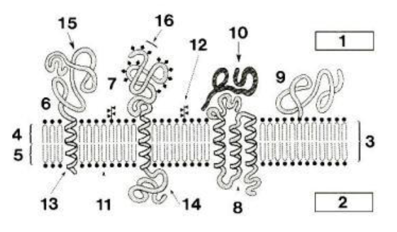
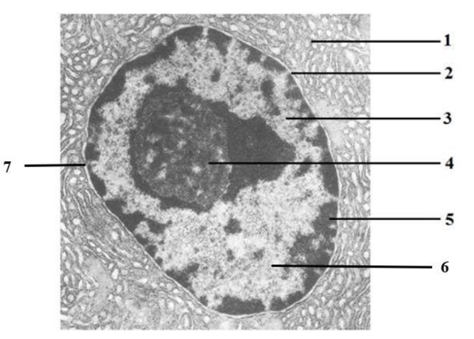

TD1 Biologie Cellulaire - Généralités sur la cellule Membrane plasmique Système endomembranaire Noyau interphasique
Exercice 1 :

1) Que représente le schéma ci-dessus ?
La membrane plasmique
2) À quelles légendes correspondent l'intérieur et l'extérieur de la cellule ?
1. Extérieur (glucides toujours du côté extérieur de la membrane) 2. Intérieur
3) À quoi correspond la légende 3 ?
La bicouche lipidique
4) Faites correspondre les numéros aux légendes placées dans le tableau -
- extérieur de la cellule
- protéine intrinsèque (à un passage
- protéine intrinsèque (à trois passages)
- intérieur de la cellule phospholipide
- glycolipide
- feuillet lipidique externe feuillet lipidique interne
- protéine extrinsèque externe bicouche lipidique
- hélice alpha hydrophobe
- domaine globulaire intracellulaire glycoprotéine intrinsèque
- domaine globulaire extracellulaire - motifs glycosidiques
- protéine extrinsèque à ancre lipidique
Numéro
Légende
1
extérieur de la cellule
2
intérieur de la cellule
3
bicouche lipidique
4
feuillet lipidique externe
5
feuillet lipidique interne
6
protéine intrinsèque (à un passage)
7
glycoprotéine intrinsèque
8
protéine intrinsèque (à trois passages)
9
protéine extrinsèque à ancre lipidique
10
protéine extrinsèque externe
11
phospholipide
12
glycolipide
13
hélice alpha hydrophobe
14
domaine globulaire intracellulaire
15
domaine globulaire extracellulaire
16
motifs glycosidiques
Exercice 2 : Donnez le nom correspondant à la définition ou répondez à la question
1- Théorie sur l'origine des mitochondries :
Théorie endosymbiotique ou endosymbiose : symbiose à l'intérieur.
2- Quels sont les 3 constituants de la membrane plasmique ?
Protéines / lipides / glucides
3- Rôle du cholestérol dans la membrane plasmique :
Augmente la rigidité de la membrane et diminue sa perméabilité
4- Comment appelle-t-on la structure formée par les glucides de la membrane ?
glycocalyx = manteau cellulaire
5- Nom du mécanisme de diffusion de l'eau à travers la membrane plasmique :
osmose
6- Nom du franchissement direct de la membrane plasmique sans intervention de protéines :
transports passifs à diffusion simple (petite molécule qui traverse dans le sens du gradient de concentration)
7- Deux types de protéines permettant le transport passif de molécules à travers la membrane :
perméases et canaux protéiques (ou canaux ioniques)
8- Protéines assurant le transport actif à travers la membrane :
ATPases (ou pompes ATP-dépendantes)
9- Mécanisme permettant aux macromolécules de traverser la membrane :
transport cytotique (endocytose ou exocytose)
Exercice 3 : Vrai ou Faux
1- La tête des phospholipides de la membrane est située vers l'intérieur de la membrane plasmique.
FAUX
2- La membrane plasmique est constituée de 50% de lipides et de 40% des protéines.
FAUX
3- La membrane plasmique est une barrière hydrophile, sélective et perméable.
FAUX
4- La membrane plasmique est une structure figée.
FAUX
5- Les transports passifs à travers la membrane plasmique se font dans le sens du gradient de concentration.
VRAI
6- Les lipides membranaires sont des molécules amphipatiques composées d'une tête hydrophobe et d'une queue hydrophile.
FAUX
7- Suivant leur localisation on peut décrire uniquement les protéines membranaires extrinsèques et les protéines périphériques.
FAUX
8- Dans la diffusion simple, le transport suit le gradient de concentration, c'est à dire du plus concentré vers le moins concentré.
VRAI
9- Les transports perméatifs se font sans déformation de la membrane.
VRAI
10- L'osmose est la diffusion de l'eau du milieu le plus concentré en électrolytes vers celui le moins concentré.
FAUX (l'eau passe toujours du milieu moins concentré vers le milieu plus concentré, pour arriver à l'équilibre)
11- Tous les transports de molécules à travers la membrane plasmique nécessitent de l'énergie.
FAUX
12- Le symport est un mode de transport actif à travers la membrane.
VRAI
Exercice 4 : Absorption du Glucose
La figure ci-dessous représente les structures cellulaires impliquées dans l’absorption du glucose au niveau des cellules épithéliales de l’intestin.
Le glucose présent dans la cavité intestinale pénètre dans les entérocytes par leur face apicale et ressort des cellules par leur face basale pour gagner le milieu interstitiel et le sang. Tout le glucose présent dans l’intestin finit par être absorbé.
Les transports membranaires situés sur la face apicale sont différents de ceux situés sur la basale. Cette dernière contient environ 150 000 transporteurs B, absents sur la face apicale des entérocytes.
Le tableau suivant montre les concentrations normales de Na+, du K+ et du glucose à l’intérieur de l’entérocyte et dans le liquide interstitiel.
Dans les entérocytes
Dans le sang et le liquide interstitiel
Na+
12 mM
148 mM
K+
140 mM
4 mM
Glucose
6 mM
0,008 mM
1) Quelle est la nature (lipidique, glucidique, protéique ou autre) des structures A, B et C ?
Nature protéique
2) Quel est le nom de ces 3 structures ?
A. Co-transport, plus spécifiquement du symport puisque les 2 transports se font dans le même sens
B. ATPase ou pompe ATP dépendante : transport actif du milieu le moins concentré vers le plus concentré
C. Canal / transport passif : du milieu plus concentré vers le milieu moins concentré
3) Pourquoi le glucose se dirige-t-il de l'intérieur de la cellule vers le sang et non l'inverse ?
Le milieu entérocytes est plus concentré que le sang. Donc pour suivre le gradient de concentration, sans aide, le glucose va sortir des entérocytes pour aller dans le sang en passant par les canaux.
4) Le gradient de concentration en sodium entre l'intérieur de la cellule et le sang changerait-il si la structure B cessait de fonctionner ? Si oui, comment et pourquoi ?
Oui, la concentration en sodium augmenterait dans les entérocytes. Car le Sodium ne pourrait plus sortir (plus de transport actif, et il continuerait à pénétrer la cellule par le À)
5) Si la structure B cessait de fonctionner, le glucose ne pourrait plus passer de la lumière de l'intestin au sang. Pourquoi ?
La concentration en NA+ à l’intérieur de la cellule augmente. Il n’y aurait plus de gradient de concentration entre l’intestin et la cellule (équilibre), donc la structure À ne pourrait plus fonctionner. Si la structure A ne peut plus fonctionner (il n’y a plus d’entrée de Na+ dans la cellule), alors le Glucose resterait dans l’intestin (il ne pourrait pas entrer par Co-transport avec Na+ qui reste dans l’intestin).
Exercice 5 : Donnez le nom correspondant à la définition ou répondez à la question
1- Définition du système endomembranaire (SEM) :
ensemble des compartiments intracellulaires limités par une membrane.
5- Transformation des protéines lors de leur maturation dans le REG :
Glycosylation (addition chaîne glucidique) et acquisition de la structure tridimensionnelle (ou conformation spatiale)
6- Nom du passage de la protéine en cours de synthèse à travers la membrane du REG :
Translocation co-traductionnelle
7- Rôles de l'appareil de Golgi :
maturation des protéines = modifications post-traductionelle des protéines et tri des protéines pour l’adressage dans les autres compartiments
8- Contenu des lysosomes :
enzymes de dégradation (hydrolase)
9- Rôle des lysosomes :
dégradation de substrats endogènes ou exogènes (<< appareil digestif de la cellule >>)
10- Étapes du transport vésiculaire antérograde :
Transport du corps cellulaire vers l’extrémité de l’axone = voie sécrétoire (permet d’apporter les choses produits au niveau du corps cellulaire vers l’extrémité).
1. Synthèse : REG (réticulum endoplasmique granuleux)
2. Appareil de Golgi
3. Transports par vésicules
4. Fusion avec la membrane
5. Exocytose du contenu des molécules
11- Quels sont les interactions de la lamina nucléaire ?
Elle interagit avec :
- les pores situés au niveau de l'enveloppe nucléaire,
- la chromatine,
- les protéines transmembranaires
12- Par quel mécanisme l'enveloppe nucléaire disparait en début de division ?
La phosphorylation des lamines composant la lamina entraine la désorganisation de la lamina et de l’enveloppe nucléaire (et ce qui permet de continuer d’avancer dans le cycle). Cette phosphorylation est provoquée par les cycline/cdk. Cela intervient au moment de la prophase (plus particulièrement pendant la prométaphase)
13- Nom de la protéine de la membrane nucléaire externe la reliant au cytosquelette :
la Nesprine
14- Rôle et composition du complexe LINC de l'enveloppe nucléaire :
Nesprine + protéine SUN
15- Chaîne de 20 à 30 acides aminés à l'extrémité N-terminale qui destine la protéine synthétisée à un certain organite de la cellule :
le peptide signal (qui permet l'adressage)
16- Petite masse d'hétérochromatine située contre l'enveloppe nucléaire et contenant un chromosome X inactivé :
le corpuscule de Barr
17- Composition de la grosse sous-unité des ribosomes :
composition des sous unités des ribosomes : protéines + ARN ribosomique. Grosse sous unité = 60S. Pour la grosse unité, ARN 5S, 5,8S et 28S + protéines.
18- Nom de la laminopathie résultant de la mutation de la lamine A :
la progéria (vieillissement accéléré des cellules)
Exercice 6 : Vrai ou Faux
1- Les organites du SEM assurent la production, le stockage, l'exportation de molécules biologiques et la dégradation des substances pouvant avoir des effets nocifs.
VRAI
2- Le RE est en continuité avec l'enveloppe nucléaire.
VRAI
3- Les membranes du réticulum endoplasmique ont une composition moléculaire identique à celle de la membrane plasmique.
FAUX (Similaire mais pas identique : moins de cholestérol et plus de protéines)
4- L'appareil de Golgi est situé à proximité de la membrane plasmique.
FAUX (Il est à proximité du noyau)
5- L'appareil de Golgi comporte une face *trans* du côté nucléaire et une face *cis* du côté de la membrane plasmique.
FAUX (C'est le contraire)
6- L'enveloppe nucléaire est continue.
FAUX (Il y a des pores nucléaires)
7- La membrane nucléaire externe est en continuité avec le REG.
VRAI
8- Les macromolécules traversent les pores nucléaires passivement par le canal central.
FAUX (Elles traversent activement, avec intervention de l'ATP)
9- Les ribosomes se forment dans le nucléole.
FAUX (Les sous-unités ribosomales se forment dans le nucléole, mais les ribosomes se forment dans le cytoplasme pendant la traduction)
10- L'hétérochromatine contient de l'ADN transcrit.
FAUX (ADN non transcrit/inactif car hyper condensé)
11- L'hétérochromatine est majoritaire et située principalement en périphérie du noyau.
VRAI
12- L'ARNr 5S est produit dans le nucléole.
FAUX (C'est le seul qui n'est pas produit dans le nucléole)
13- Une mutation du gène de la lamine A entraine une désorganisation de l'euchromatine.
FAUX (Désorganisation de l'hétérochromatine)
14- La protéine Ran est impliquée dans le transport à travers l'enveloppe nucléaire.
VRAI
15- La forme RanGTP est active et majoritaire dans le cytoplasme.
FAUX (RanGTP est active mais majoritaire dans le noyau)
Exercice 7 : Le Noyau
Ci-dessous une photo d'un noyau.

1) Indiquez les légendes correspondant aux numéros
Numéro
Légende
1
Cytoplasme - Réticulum endoplasmique
2
Enveloppe nucléaire (double bicouche lipidique)
3
Euchromatine (chromatine décondensée, et active niveau transcriptionnelle)
2) Quelle est le type de microscope ayant permis cette observation ?
MET (microscope électronique à transmission)
Exercice 8 : Microscopie
1) Indiquez pour chacun des microscopes ci-dessous leur utilisation
A - Visualisation des membranes et de la structure des compartiments subcellulaires
B - Visualisation d’objets vivants sans marquage préalable
C - Visualisation de la surface d’un échantillon
D - Visualisation de substances marquées par un fluorochrome
Technique
Correspondance
1. Microscope optique
B
2. Microscope à fluorescence
D
3. Microscope électronique à transmission (MET)
A
4. Microscope électronique à balayage (MEB)
C
2) Faites correspondre les images au microscope ayant permis de les obtenir